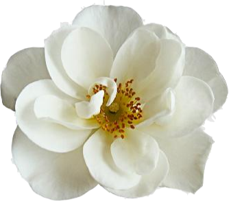
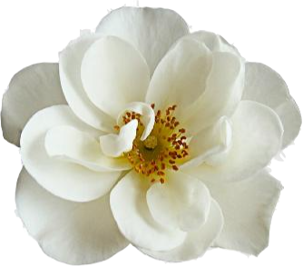
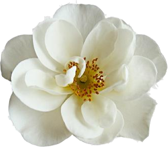

Your garden has been invaded by a flock of humming birds!
Eat flowers to survise the invasion!

A delightful game where you embody a graceful butterfly, capturing the essence of blooming flowers while skillfully avoiding mischievous hummingbirds that have invaded the serene garden. Immerse yourself in a world of tranquility, accompanied by soothing melodies that enhance relaxation. Embark on this enchanting journey and let your wings carry you to a place of serene bliss amidst the vibrant summer. Game developed by @AlexaVas

 
